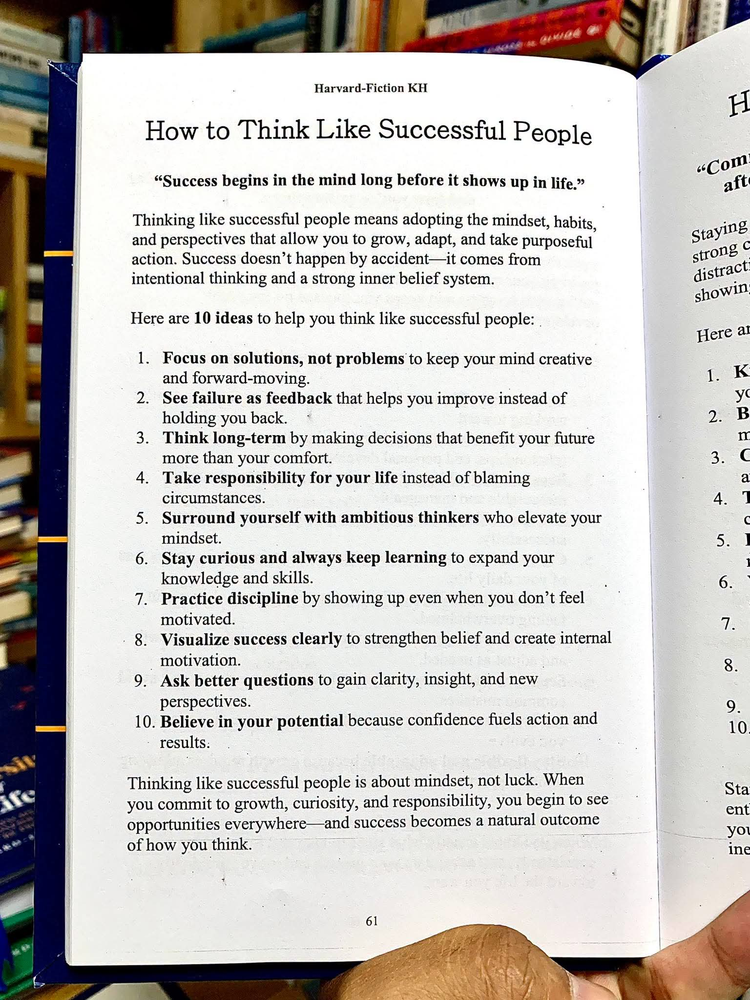

Hujan membungkus kawasan Dago Pakar dengan keheningan yang mengancam. Di dalam ruang kerja berdinding kaca silika tebal, tiga pasang mata menatap sebuah layar hologram yang menampilkan grafik fluktuasi algoritma suplai energi mikro kota Bandung. Di luar, petir sesekali menyambar, menerangi siluet patahan Lembang di kejauhan. Ketegangan di dalam ruangan itu jauh lebih pekat daripada badai yang mengamuk di luar.
Tiga orang di dalam ruangan itu bukan orang sembarangan. Mereka adalah arsitek intelektual di balik proyek "Bandung Resilien 2030". Pertama, Dr. Arka Danuarta, seorang neurosaintis kognitif eksentrik yang memercayai bahwa efisiensi sebuah sistem kota berbanding lurus dengan sinkronisasi neuro-ritme warganya. Kedua, Kirana Pramesti, seorang matematikawan sistem kompleks lulusan ITB yang mampu melihat pola di dalam kekacauan murni. Ketiga, Gibran Mahendra, seorang insinyur infrastruktur siber bersikap dingin yang bertugas mengunci semua gagasan abstrak itu ke dalam realitas digital.
Malam ini, sistem yang mereka bangun mengalami anomali masif. Generator kuantum di sub-stasiun Cibeunying mengalami lonjakan destruktif yang tidak bisa dijelaskan secara matematis. Jika tidak ditangani dalam waktu tiga jam, seluruh jaringan energi kota akan lumpuh total, memicu kepanikan massal di tengah malam yang membeku.
Pilar 1: Fokus pada solusi, bukan problems. Di saat krisis memuncak, pikiran yang lemah mencari kambing hitam; pikiran yang unggul langsung meretas jalan keluar.
"Ini sabotase," desis Gibran, jemarinya bergerak cepat di atas keyboard mekanisnya yang berbunyi tajam seperti rentetan tembakan. "Seseorang menyisipkan baris kode aneh dari dalam jaringan internal kita. Arka, hanya kau dan aku yang memiliki kunci enkripsi tingkat nol. Jangan bilang kau mencoba melakukan eksperimen neuro-sosial gilamu di saat seperti ini?"
Arka tidak langsung menjawab. Ia berjalan mendekati dinding kaca, menatap lampu-lampu kota Bandung di bawah sana yang mulai berkedip-kedip tak menentu seperti ritme jantung pasien koma. Wajahnya tenang, terlalu tenang untuk seseorang yang sedang dituduh melakukan pengkhianatan tingkat tinggi. "Gibran, jika fokusmu hanya pada siapa yang bersalah, kita akan kehilangan seluruh kota ini sebelum fajar. Berhenti mencari musuh dalam selimut. Lihat layarmu. Solusinya bukan mencari pelaku, melainkan mengisolasi sub-stasiun Cibeunying dengan mengalihkan beban induktif ke kanal cadangan di Gedebage."
"Gedebage belum siap, Arka!" potong Kirana dengan nada suara yang meninggi, memecah keheningan ruangan. "Matematikanya tidak masuk akal. Jika kita memaksakan arus induktif ke sana sekarang, fluktuasi non-liniernya akan menghancurkan node distribusi lokal. Kita tidak hanya mematikan lampu, kita bisa membakar transformator regional!"
"Maka kita ubah variabel non-liniernya menjadi konstan," jawab Arka tenang. Ia berbalik, menatap Kirana tajam. "Kau adalah orang yang selalu berkata bahwa kekacauan adalah pola yang belum selesai terbaca. Baca pola itu sekarang, Kirana. Jangan biarkan ketakutan membutakan logikamu."
Suasana semakin mencekam ketika indikator di layar berubah warna dari kuning peringatan menjadi merah darah. Konflik psikologis di antara ketiganya bukan baru tumbuh malam ini; ini adalah akumulasi dari ego intelektual yang telah terpendam bertahun-tahun. Masing-masing merasa memiliki kunci paling valid terhadap masa depan kota.
Gibran menggebrak meja. "Aku tidak bisa membiarkan dialihkan ke Gedebage! Itu melanggar protokol keamanan tingkat tinggi yang kubangun. Aku menolak bertanggung jawab atas kegagalan sistem ini!"
Pilar 2 & 4: Lihat kegagalan sebagai feedback dan Ambil tanggung jawab penuh atas hidupmu. Orang gagal selalu menyalahkan keadaan dan protokol; orang sukses menjadikan kegagalan sebagai data untuk melompat lebih tinggi.
Arka melangkah mendekati Gibran, menatap langsung ke dalam manik mata insinyur siber itu. "Gibran, dengarkan aku baik-baik. Kegagalan algoritma malam ini adalah umpan balik paling jujur yang pernah kita terima selama tiga tahun proyek ini berjalan. Sistem kita rapuh karena kau membangun dinding perlindungan yang terlalu kaku, bukan karena ada sabotase. Mengakuilah. Jangan melemparkan tanggung jawab ini pada keadaan atau musuh imajiner. Jika kota ini gelap malam ini, itu adalah tanggung jawab kita bertiga. Tanggung jawabmu. Tanggung jawabku. Tanggung jawab Kirana."
Kata-kata Arka menghantam mental Gibran. Ada kebenaran pahit yang menyengat di sana. Di bawah tekanan psikologis yang luar biasa, Gibran merasakan dorongan batin untuk mundur, membiarkan sistem runtuh agar ia bisa berkata 'aku sudah memperingatkan kalian'. Namun, pilar mentalnya sebagai seorang profesional mendesak sebaliknya.
Kirana memperhatikan interaksi itu dengan napas yang tertahan. Sambil memegang kepalanya yang mulai berdenyut, ia membuka lembaran coretan teoritisnya. "Jika kita menggunakan perspektif jangka panjang," gumam Kirana, suaranya nyaris berbisik namun terdengar jelas di ruangan yang sunyi itu. "Jika kita menyelamatkan Cibeunying dengan mengorbankan kenyamanan Gedebage malam ini, apa dampaknya bagi struktur jaringan makro dalam sepuluh tahun ke depan?"
Pilar 3: Berpikir jangka panjang. Keputusan yang diambil demi kenyamanan sesaat seringkali menjadi racun di masa depan. Sukses menuntut keberanian memilih opsi yang pahit hari ini demi kejayaan esok hari.
"Tepat sekali, Kirana," dukung Arka. "Kita harus berpikir melampaui malam ini. Kenyamanan warga Gedebage mungkin terganggu selama beberapa jam karena pemadaman bergilir yang terkontrol, tetapi langkah ini menyelamatkan integritas struktural seluruh kota dalam jangka panjang. Jika kita mempertahankan status quo hanya karena takut pada kegagalan jangka pendek, kita sedang merencanakan kehancuran total di masa depan."
Kirana mengangguk perlahan. Kepalanya mulai bekerja dalam ritme yang berbeda. Ia mulai mengesampingkan ketakutannya terhadap deviasi matematis. Ia sadar bahwa di sekelilingnya ada orang-orang dengan kapasitas otak luar biasa, dan ia tidak boleh menjadi titik lemah dalam trinitas intelektual ini.
Jam digital di dinding terus berdetak tanpa ampun. Waktu tersisa sembilan puluh menit. Gibran masih bersikeras mempertahankan argumen keamanannya, mengunci akses konsol utama dengan sidik jari biologisnya. Ketegangan psikologis mencapai titik nadir ketika Arka mendeteksi adanya keanehan pada denyut nadi Gibran melalui sensor biomonitoring ruangan.
"Gibran, kau menyembunyikan sesuatu," kata Arka dengan nada yang kini terdengar dingin dan mengintimidasi. "Detak jantungmu berfluktuasi secara tidak wajar saat aku menyebutkan kata 'sabotase dari dalam'. Mengapa kau begitu yakin ada orang dalam yang melakukannya? Ataukah... orang dalam itu adalah dirimu sendiri?"
Kirana terperanjat, menatap Gibran dengan pandangan tidak percaya. "Gibran? Apakah ini benar?"
Gibran terdiam, wajahnya pucat di bawah siraman cahaya monitor. Keheningan yang tercipta begitu tebal hingga suara tetesan air hujan di luar terdengar seperti hantaman palu sidak. Detik-detik berlalu, menguras ketahanan mental siapa pun yang berada di ruangan itu.
"Aku dipaksa," suara Gibran akhirnya pecah, terdengar serak dan penuh keputusasaan. "Sebuah konsorsium korporasi hitam mengancam akan menghancurkan reputasi dan keluargaku jika aku tidak memberikan celah pada sub-stasiun Cibeunying. Mereka ingin proyek kita gagal agar pemerintah kota membatalkan kontrak kita dan beralih ke penyedia konvensional milik mereka. Aku terjebak, Arka! Aku tidak punya pilihan!"
Pilar 5 & 7: Kelilingi dirimu dengan pemikir ambisius dan Praktikkan disiplin tanpa syarat. Di titik terendah karakter seseorang, lingkungan sekitar akan menentukan apakah ia akan hanyut atau bangkit berdiri menegakkan disiplin moralnya.
Arka tidak marah. Ia justru melangkah mendekat dan meletakkan tangannya di bahu Gibran yang gemetar. "Kau salah, Gibran. Kau selalu punya pilihan. Kau lupa dengan siapa kau bekerja selama ini? Kita bukan hanya sekelompok pekerja yang mencari gaji. Kita adalah para pemikir ambisius yang bertekad mengubah peradaban urban. Ketika kau mengelilingi dirimu dengan kami, kau seharusnya tahu bahwa kami tidak akan membiarkanmu jatuh ke dalam lubang keputusasaan itu sendirian."
"Tapi mereka memegang kendali atas semua data pribadiku!" teriak Gibran frustrasi.
"Maka kita rebut kembali kendali itu!" sahut Kirana dengan mata yang menyala-nyala oleh keberanian baru. "Gibran, tunjukkan disiplin yang biasa kau miliki. Ingat bagaimana kau mengajari kami tentang arsitektur kode yang tidak bisa ditembus? Terapkan itu sekarang. Lawan ketakutanmu. Tunjukkan pada mereka bahwa kecerdasan tidak bisa diintimidasi oleh ancaman."
Motivasi internal Gibran yang sempat mati suri akibat tekanan mental, perlahan-lahan mulai bangkit kembali. Disiplin mental sebagai seorang insinyur yang telah ditempanya selama belasan tahun mengambil alih kendali emosinya. Ia menghapus air mata yang sempat menggenang, lalu menatap layar dengan fokus yang tajam.
"Baik," kata Gibran, suaranya kembali tegas dan penuh wibawa. "Aku akan membuka enkripsi tingkat nol. Kirana, aku butuh kau menghitung ulang matriks pengalihan beban ke Gedebage dalam waktu lima belas menit. Arka, kau harus memantau stabilitas kognitifku agar aku tidak melakukan kesalahan fatal saat mengeksekusi override manual ini."
Lima puluh menit menjelang batas waktu kritis. Ruangan itu kini berubah menjadi medan pertempuran intelektual yang luar biasa dinamis. Kirana terus-menerus mencoret-coret papan kaca dengan rumus-rumus kalkulus stokastik, sementara Gibran mengetik dengan kecepatan ekstrem, menembus lapisan demi lapisan kode destruktif yang sempat ia tanam sendiri atas perintah konsorsium tersebut.
Pilar 6 & 8: Tetap penasaran dan selalu belajar serta Visualisasikan kesuksesan dengan jelas. Jangan pernah puas dengan apa yang sudah diketahui, dan selalu bayangkan kota yang terang benderang sebagai hasil akhir dari setiap peluh yang menetes.
"Ada fungsi rekursif aneh di dalam malware ini," puji Gibran di sela-sela ketikannya. "Aku belum pernah melihat struktur logika seperti ini sebelumnya. Ini menantang rasa ingin tahuku. Jika aku berhasil mempelajari cara kerjanya sekarang, aku bisa membangun firewall yang sepuluh kali lebih kuat di masa depan."
"Gunakan rasa penasaran itu, Gibran!" seru Arka sambil memantau grafik gelombang otak Gibran di tabletnya. "Visualisasikan hasil akhirnya. Bayangkan fajar menyingsing di atas kota Bandung, lampu-lampu jalan menyala normal, anak-anak berangkat sekolah dengan aman, dan proyek kita terbukti menjadi benteng yang tak tergoyahkan. Visualisasikan kemenangan itu di dalam pikiranmu sekarang!"
Visualisasi kolektif itu menciptakan semacam resonansi psikologis yang kuat di dalam ruangan. Ketiganya tidak lagi merasa sebagai individu yang terisolasi dengan ketakutan masing-masing, melainkan sebagai satu kesatuan pikiran yang bergerak menuju satu tujuan mutlak.
Namun, sebuah rintangan terakhir muncul. Sistem menolak perintah override karena mendeteksi adanya ketidakcocokan parameter pada gerbang logika terakhir. Waktu tersisa sepuluh menit.
"Gagal," bisik Gibran, tangannya kaku di atas keyboard. "Sistem meminta konfirmasi kunci analog yang tidak ada di dalam database kita. Apa yang terlewat?"
Pilar 9 & 10: Ajukan pertanyaan yang lebih baik dan Percayalah pada potensimu. Saat menemui jalan buntu, ubah cara bertanyamu. Jawaban yang tepat hanya lahir dari pertanyaan yang cerdas, didorong oleh keyakinan penuh pada kapasitas diri.
Arka melangkah maju, memandang baris perintah yang berkedip merah itu. alih-alih panik, ia menarik napas dalam-dalam. "Gibran, kau bertanya 'apa yang terlewat dari database?'. Itu pertanyaan yang salah. Pertanyaan yang lebih baik adalah: 'Di mana letak kunci analog yang paling aman yang tidak akan pernah bisa diakses oleh jaringan luar?'"
Kirana mendongak dari papannya, matanya melebar saat menyadari sesuatu. "Kunci analog yang tidak ada di digital... Arka, maksudmu... tanda tangan neuro-ritme kita sendiri? Pengaturan awal yang kita buat saat pertama kali mendirikan laboratorium ini!"
"Tepat sekali," senyum Arka mengembang. "Kunci itu ada di dalam diri kita sendiri. Percayalah pada potensimu, Gibran. Percayalah pada sistem yang kita rancang dengan hati dan pikiran kita sendiri. Tempatkan telapak tanganmu pada pemindai biologis, dan biarkan frekuensi otakmu yang terkalibrasi menjadi dekoder terakhir."
Gibran menatap telapak tangannya yang basah oleh keringat. Rasa ragu sempat melintas, namun ketika ia melihat keyakinan yang tak tergoyahkan di mata Arka dan Kirana, ia tahu bahwa ia tidak boleh ragu pada dirinya sendiri. Percayalah pada potensi yang ada. Sifat percaya diri adalah bahan bakar utama untuk melahirkan tindakan yang nyata.
Dengan mantap, Gibran meletakkan telapak tanganmu di atas panel pemindai kaca. Cahaya laser hijau memindai kulitnya, menembus hingga ke pembuluh darah dan membaca sinyal bio-elektrik yang dikirimkan langsung dari sistem saraf pusatnya yang kini telah berada dalam kondisi sinkronisasi penuh dengan visi Arka.
Detik demi detik terasa seperti keabadian. Layar berkedip sekali... dua kali... lalu warna merah pekat itu perlahan memudar, digantikan oleh warna hijau zamrud yang menenangkan. Grafik fluktuasi energi di sub-stasiun Cibeunying perlahan melandai dan stabil. Beban berhasil dialihkan ke Gedebage dengan presisi matematis yang sempurna tanpa menimbulkan malapetaka yang ditakutkan sebelumnya.
Di luar, badai perlahan mereda. Cahaya kemerahan fajar mulai tampak di ufuk timur, menyinari kota Bandung yang tetap hidup, aman, dan terang benderang.
Ketiganya terduduk lemas di kursi masing-masing, kelelahan secara fisik namun merasakan kepuasan psikologis yang luar biasa. Mereka sadar, kesuksesan yang mereka raih malam ini bukanlah sebuah kebetulan atau keberuntungan semata. Itu adalah hasil dari komitmen total terhadap sebuah pola pikir yang unggul—pola pikir yang menolak untuk menyerah pada masalah, berani mengambil tanggung jawab, dan selalu percaya pada potensi sejati manusia.
"Berpikir seperti orang sukses adalah tentang metodologi mental, bukan keberuntungan. Ketika Anda berkomitmen pada pertumbuhan, rasa ingin tahu, dan tanggung jawab penuh, Anda akan melihat peluang di tengah badai sekalipun."